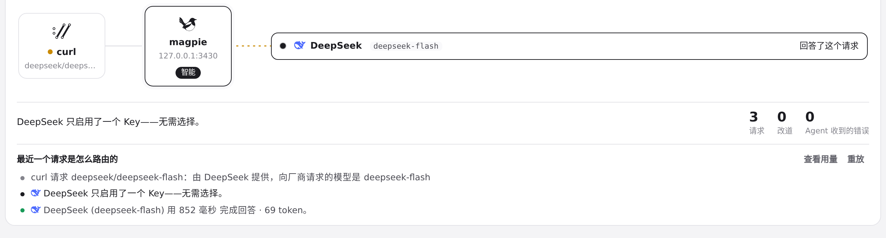
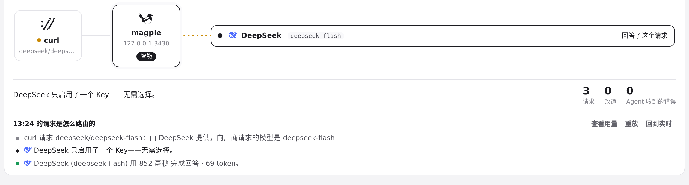
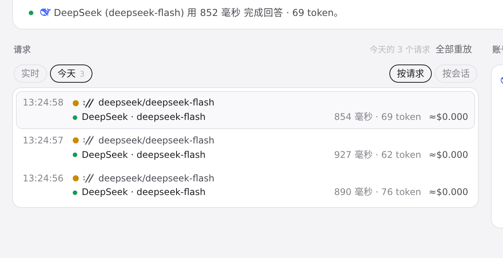
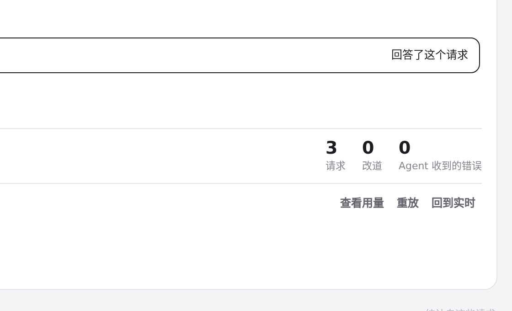

#784 界面预览
commit ae008af · 回到 PR · 路由页里，选中调用用途（或某个历史日期）后，顶部统计、失败请求入口和「最近一个请求」的故事一起收窄到筛选后的列表，未筛选时仍显示网关启动以来的总数；用途别名与英文名改由 usage.PurposeKinds 统一生成 purposes.js，前端按同一份目录归类。
红线是鼠标走过的轨迹，红色圆环是一次点击；底部文字是这一步在做什么。空格暂停，← → 逐段查看。

路由页：统计与请求列表随日期筛选变化 · 路由页顶部：未选用途、未选日期时的统计
路由页：统计与请求列表随日期筛选变化 · 请求列表上方的日期筛选：实时 / 今天

路由页：统计与请求列表随日期筛选变化 · 选中「今天」后的统计

路由页：统计与请求列表随日期筛选变化 · 「今天」列表里的请求

没有失败请求时的错误入口 · 悬停错误统计时的状态